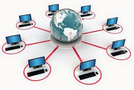

O que são redes de computadores |
|
| As redes de computadores são formadas pela interligação de dois ou mais dispositivos computacionais por meio de um sistema de comunicação. Esse sistema é baseado em um conjunto de regras e modelos que possibilitam o compartilhamento de informações, serviços e recursos entre dispositivos. É comum que essa conexão seja feita através de cabos de rede, Wi-Fi (conexão sem fio) ou uma combinação de ambos. Dessa forma, assim como em uma empresa de entrega, precisamos ter postos de coleta e encaminhamento, veículos e pessoas em sua área de atuação para garantir o encaminhamento dos pacotes entre uma cidade no Norte do país e outra no Sul. Assim, nas redes de computadores, temos uma infraestrutura composta por elementos físicos de ligação (diferentes tipos de cabos de rede) e dispositivos eletrônicos dedicados ao encaminhamento das mensagens entre computadores (roteadores, switches, hubs) para definição das rotas de tráfego e realização da transmissão dos dados entre a origem e o destino. |  |
| Compartilhamento de informações e recursos | Compartilhamento de hardware | Entretenimento e uso doméstico | Acesso à Internet | Comunicação | Acesso remoto |
|---|---|---|---|---|---|
| o que permite que os dispositivos de uma mesma rede compartilhem arquivos, documentos, áudios, vídeos etc. Facilitando o acesso e a colaboração aos dados compartilhados. | é possível compartilhar dispositivos periféricos, como impressoras, scanners, unidades de armazenamento, entre outros. Assim, esses dispositivos se tornam acessíveis a todos os computadores conectados na mesma rede. | em ambientes domésticos, as redes são usadas para jogos online, streaming de mídia, controle de dispositivos domésticos inteligentes, etc. | através das redes que acessamos a Internet, o que possibilita a conexão a websites, redes sociais, serviços online, etc. | as redes viabilizam a comunicação entre pessoas, dispositivos e sistemas através de serviços como e-mail, videoconferências, mensagens instantâneas e voz sobre IP (VoIP) . | através das redes é possível acessar informações e recursos de maneira remota, sem a necessidade de se estar no local das instalações físicas. |
O TCP/IP é um protocolo que combina dois outros protocolos: o Protocolo de Controle de Transmissão (TCP), que realiza a transmissão de dados e o Protocolo de Internet (IP), responsável pelo roteamento e endereçamento de pacotes de dados. O TCP/IP é um dos protocolos mais importantes atualmente, pois possibilita a comunicação entre computadores e servidores, formando a Internet.
| Modelo TCP/IP | ||
|---|---|---|
| 1 | Camada de aplicação | A camada de aplicação responsável pelos programas e protocolos que possibilitam o TCP/IP dar início a transmissão de dados. |
| 2 | Camada de Transporte | A camada de transporte estabelece como os dados serão transmitidos na rede, levando em consideração o uso, prioridade e criticidade do conteúdo trafegado. |
| 3 | Camada de Rede | A camada de rede também é conhecida como camada de Internet. É responsável pelo roteamento dos pacotes de dados entre os dispositivos em diferentes redes. |
| 4 | Camada de enlace | A camada de enlace também conhecida por camada de interface, é responsável pela transferência dos dados a nível físico, cuidando de aspectos como endereçamento físico, controle de acesso ao meio e detecção de erros a nível de enlace. |